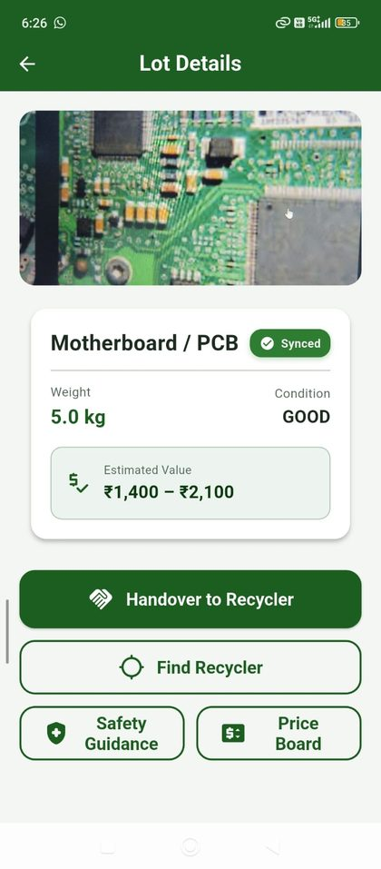
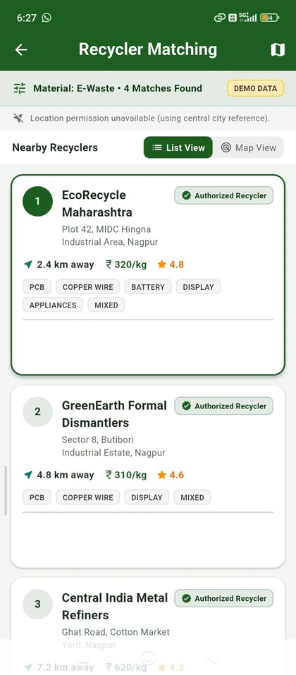

A vernacular, offline-first platform that helps informal e-waste collectors identify material, discover fair value, meet authorized recyclers and keep proof of every handover.
See how it worksWe are Gurlypops, a four-person team in the AI & ML domain of the CSI Hackathon.
We chose a problem we could see clearly: e-waste leaves homes through informal collectors, and the trail goes dark before it reaches a verified recycler.
Kabadiwala Connect is our answer. It strengthens the network that already exists instead of replacing it.
Material enters the informal network, but visibility is lost before verified formal recycling.
Today MetalMandi helps with price discovery, The Kabadiwala with collection, Karo Sambhav with EPR and formalization, and traditional networks with last-mile reach. The connection from field collector to authorized recycler is still open.
The collector gathers e-waste from households, markets or institutions.
AI-assisted material categorization plus weight entry. Point the camera, confirm the weight.
AI & MLA local market-based price range, shown openly before any deal.
Find nearby verified, authorized recyclers on a map.
A digital handover record, payment confirmation and a material passport that follows the lot.
Verifiable recordThe working prototype: a collector logs a lot, sees a fair value, then finds an authorized recycler nearby.

Lot details and fair value

Recycler matching
Strengthens informal collector networks instead of replacing them.
Market-based price guidance for better earnings.
End-to-end traceability from collector to authorized recycler.
Multilingual, low-literacy friendly, with offline support.
Transparent price ranges for collected e-waste.
Connects collectors with nearby verified recyclers.
Helps identify and categorize e-waste.
Simple records for payments, quantities and transactions.
Plan and design, develop, test, deploy, iterate. Frontend, backend and database modules are built iteratively and tested with real-world scenarios.
Prototype status: core features work (registration, material listing, recycler matching, digital records) and are being tested with sample users for usability and feedback.
Test and refine with a small set of collectors and recyclers.
Expand to more wards and recyclers within the city.
Integrate with state pollution control boards and e-waste networks.
Scale across India with AI, analytics and policy integration for data-driven decisions.